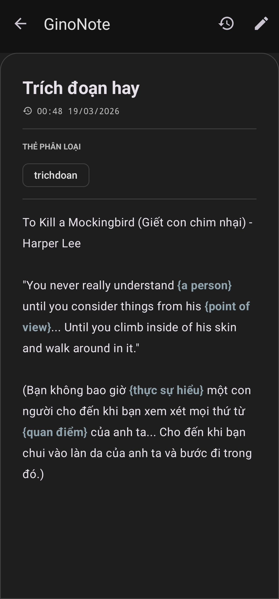
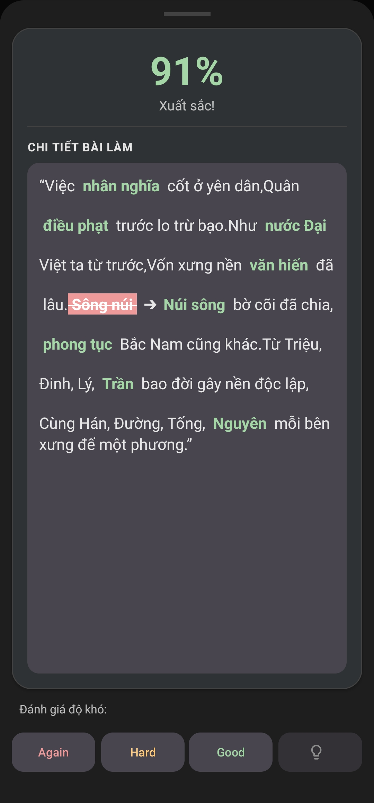
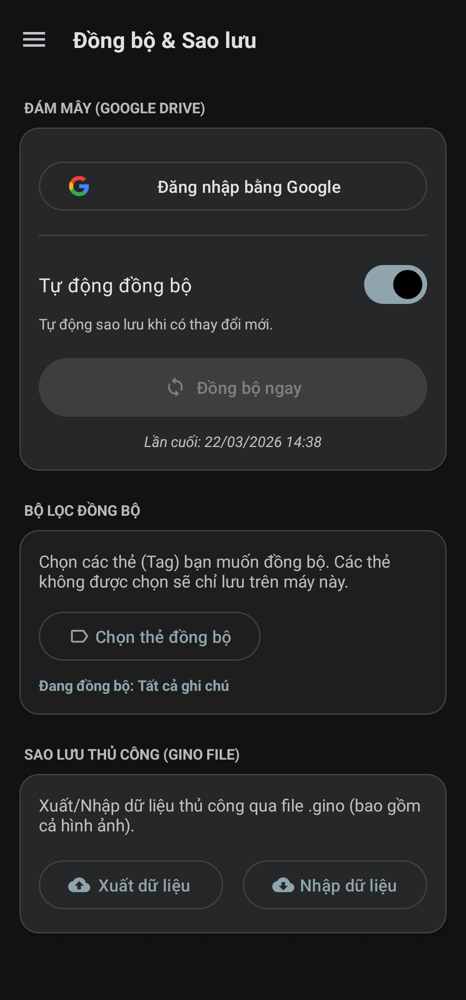

Khắc ghi chú vào trí nhớ
Tải ứng dụng từ Play Store
Không gian Ghi chú Tối giản, Tập trung và Hỗ trợ Học tập
Dưới đây là mô tả chi tiết cho các nút thao tác trên thanh công cụ:
- arrow_back Nhấn vào biểu tượng này để đóng bản ghi chú hiện tại và trở về màn hình danh sách chính.
- lightbulb Bôi đen từ khóa bạn cho là quan trọng/ cần ghi nhớ. Khi bôi đen từ khóa và nhấn vào biểu tượng bóng đèn, hệ thống sẽ bọc từ khóa trong ngoặc nhọn (ví dụ: {quan điểm}) để tạo thành các ô trống ẩn từ.
- palette Cho phép bạn cá nhân hóa ghi chú hiện tại. Bạn có thể thay đổi màu nền hoặc màu sắc của các thẻ phân loại, giúp phân biệt nhanh các nhóm ghi chú bằng trực giác.
- image Thêm dữ liệu trực quan vào bài viết của bạn. Chạm vào để tải hình ảnh có sẵn hoặc mở camera chụp trực tiếp và chèn vào giữa các dòng văn bản.
- save Chủ động lưu trữ thủ công mọi thay đổi bạn vừa thực hiện, đảm bảo nội dung và các thẻ phân loại được đồng bộ lên hệ thống an toàn.
- history Truy cập vào lịch sử ôn tập của bản ghi chú. Tính năng này giúp bạn dễ dàng theo dõi ngày ôn tập tiếp theo và danh sách lịch sử kết quả ôn tập.
- edit Chuyển đổi nhanh từ chế độ xem sang chế độ soạn thảo để bắt đầu chỉnh sửa văn bản, thêm thẻ hoặc thay đổi nội dung ghi chú.
- play_arrow Khởi động chế độ ôn tập tập trung. Hệ thống sẽ chuyển sang giao diện thực hành, ẩn đi các từ khóa trong ngoặc nhọn để bạn chính thức kiểm tra trí nhớ.


Hệ thống Ôn tập Chủ động
Chi tiết Chức năng & Cách thức Hoạt động:
- help_outline Icon Trợ giúp (?): Khi bạn "bí" từ, nhấn vào biểu tượng này để nhận một gợi ý nhỏ mà không làm mất đi nỗ lực tự hồi tưởng.
- fact_check Nút Kiểm tra đáp án: Khóa đáp án của bạn và tiến hành đối chiếu với bản gốc để đưa ra kết quả ngay lập tức.
- spellcheck Sửa lỗi trực quan: Hệ thống chấm điểm %, tô xanh từ đúng và bôi đỏ từ sai kèm đáp án chính xác. Tính năng Mercy giúp sửa lỗi đánh máy nhanh.
- thumbs_up_down Đánh giá độ khó (Again - Easy): Thuật toán căn cứ vào lựa chọn của bạn để lên lịch ôn tập hoàn hảo cho lần tiếp theo.

Nhật ký Học tập Trực quan
- lens Dấu chấm đỏ dưới các ngày: Đánh dấu các mốc "Dấu chân tri thức" khi bạn tạo ghi chú hoặc ôn tập mới trong ngày.
- restore Trở về hiện tại: Một chạm để quay lại lịch trình của ngày hôm nay dù bạn đang ở bất kỳ tháng nào.
- list_alt Dòng thời gian bài học: Hiển thị chi tiết toàn bộ danh sách ghi chú đã tạo hoặc lịch sử ôn tập khi chọn một ngày cụ thể.

Trực Quan Hóa Mọi Hành Trình Ghi Nhớ
- bar_chart Thống kê theo Tuần/Tháng/Năm: Đếm tổng lượng ghi chú và lượt tương tác để theo dõi sự tăng trưởng tri thức.
- psychology Phân tích Ghi nhớ: Trực quan hóa số lượng ghi chú "Đang ôn" và "Đã thuộc" để đánh giá chất lượng học tập.

Kết Nối Tri Thức Không Giới Hạn
- cloud_sync Đồng bộ Google Drive: Tự động sao lưu mọi chỉnh sửa lên đám mây, đảm bảo dữ liệu luôn nhất quán trên mọi thiết bị.
- share Chia sẻ file .gino: Đóng gói toàn bộ nội dung và hình ảnh thành một tệp tin duy nhất để trao đổi tài liệu cực kỳ nhanh chóng.
Khám phá sức mạnh của GinoNote
Tối ưu ghi nhớ khoa học
Khắc sâu kiến thức vào trí nhớ dài hạn nhờ sự kết hợp giữa Active Recall và Spaced Repetition, giúp tiết kiệm thời gian học mà vẫn đạt hiệu quả cao nhất.
Thống kê thông minh
Theo dõi tiến độ bản thân qua hệ thống trực quan, tự động dự báo khối lượng bài cần ôn để bạn luôn làm chủ kế hoạch học tập mỗi ngày.
Dễ dàng chia sẻ
Đóng gói và chia sẻ kho tàng kiến thức qua file .gino độc quyền, giúp trao đổi các bộ thẻ ghi chú tiện lợi và sử dụng ngoại tuyến dễ dàng.
Sẵn sàng khắc ghi chú vào trí nhớ?
Đừng chỉ ghi chép rồi để đó. Hãy để GinoNote giúp bạn chuyển hóa thông tin thành tri thức. Ứng dụng hệ thống khoa học Active Recall và Spaced Repetition là khoản đầu tư bền vững nhất cho tư duy của bạn.